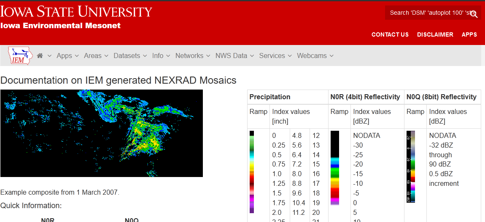
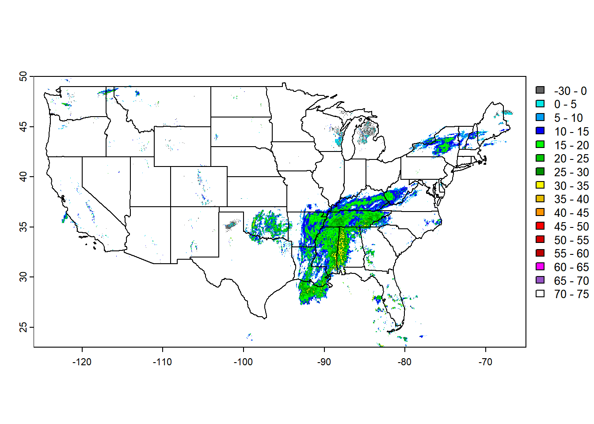
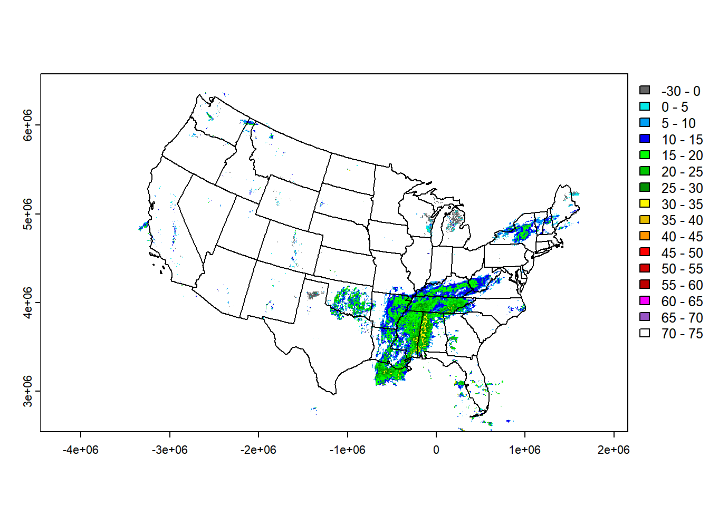

Visualizing NEXRAD Radar Data from Iowa State University
Author
Alec Wong

Overview
Iowa State University maintains a high-resolution high-frequency dataset of the radar reflectance measured over the United States of America. I am personally interested in working with geospatial data, and lately weather data, so as an exercise I thought it interesting to try and format the data for use. As an end product I’ll make a .gif of a particular day’s radar measurements.
The Data
Iowa state mentions that:
The data are available at 5-minutes intervals since 2010.
The data since 2010 have higher resolution in both reflectivity measurements and spatially.
The png raw data values map to a scale spanning -35 dbz to 75 dbz.
The CRS in use is WGS84.
There is no API to obtain the data – all of the data are presented in a raw HTML directory listing, organized by year, month, and day.
My approach is then to scrape the website directory for all the files, download them, and then work them up locally into an animation.
Workflow
Here are the packages I’ll be using in this workflow.
library(dplyr)
Attaching package: 'dplyr'
The following objects are masked from 'package:stats':
filter, lag
The following objects are masked from 'package:base':
intersect, setdiff, setequal, union
library(rvest) # For scraping the website library(terra) # For manipulating raster data
terra 1.7.78
library(sf) # For manipulating vector data
Linking to GEOS 3.12.1, GDAL 3.8.4, PROJ 9.3.1; sf_use_s2() is TRUE
library(magick) # For manipulating the images later on into a gif
First I’ll decide on a date to pull data for. Interesting dates will be days when some meteorological event occurred – I’ll pick Tropical Storm Olga, which started in the Gulf of Mexico on October 25, 2019, and ripped its way quickly up north through the midwestern United States before dissipating in Canada on October 27, 2019.
Tinkering
When I develop I usually tinker around interactively with a small example first, and then formalize it into a more organized system of functions.
I’ll start by setting some information – the date in a config object, and the URL location of the NEXRAD data.
Next I’ll read the webpage hosting the data. It is a bare webpage indexing the file contents sitting at that address.
There is probably a better way to approach downloading the files, but I know that I want the .png image files, and I know that I want the n0q files, which are higher-resolution in space and reflectivity.
The destination for those image files are just the file name after the URL, so I develop those destinations next.
# Need to get the list of images that iastate is providing from this website.page = rvest::read_html(url)# We get all the links on the page, and then the href. This is just a bare# template HTML listing the contents of the directory so this should be fairly# robust, but there's surely a better way...files = rvest::html_elements(page, xpath = r'(//a)') |> rvest::html_attr('href')# The files of interest have n0q in the namefiles = files[grepl(pattern ='n0q', x = files) &!grepl(pattern ='max', x = files)]# Create output directory if not presentdir.create(file.path('nexrad_images', dirname), showWarnings =FALSE, recursive =TRUE)# Avoid downloading files twice, if already presentfiles_keep =setdiff(files, list.files(file.path('nexrad_images', dirname)))# Download the filesfiles_download =file.path(url, files_keep)files_dest =file.path('nexrad_images', dirname, files_keep)# # # # # # # # # # # # # # ## Download filesif (length(files_download)) { curl::multi_download(files_download, files_dest, progress =TRUE)}# # # # # # # # # # # # # # #
With the files in hand, which again are just .png files, let’s take a look at just one. We’ll load it up using terra::rast, ensure it has the correct CRS, and reproject it to UTM Zone 17 for plotting.
# Let's play around with a test filetest_file = files[1]img = terra::rast(file.path('nexrad_images', dirname, test_file))crs(img) =crs("EPSG:4326") # Set the CRS explicitly to WGS84. It's already using that but do it to be safe.utm_zone_17 =crs('EPSG:32617') # We'll use another projection -- UTM Zone 17 -- to see how it differsimg[img ==0] =NA# Remove 0 levels; these are either missing or no cloud cover so we discard them for the purpose of visualizationimg2 = terra::project(img, utm_zone_17) # Reproject the original image to utm Zone 17.
The documentation for the data provides cuts for a common color representation for the reflectivity. This, I assume, is the general appearance of radar weather maps you typically see on things like weather channels.
We’ll prep the data and reclassify the reflectivity values into these cuts.
# This next rounding step is necessary for the mapping later. The original# dataset has integer precision, so we want to keep it that way. Reprojection# has the side-effect of aggregating some pixel values so we might lose a bit of# accuracy but we round back to integer precision for the purpose of the color# mapping.values(img2) =round(values(img2))# Reclassify values. Raw values range from 0-255. Output values range -35 to 75# dbz, but < 0dbz is mapped to 0.raw_range =seq(0, 255)output_range =seq(-30, 75, length.out =length(raw_range))mapping =cbind( raw_range, output_range)img =classify(img, mapping)img2 =classify(img2, mapping)colors =c('#646464','#04e9e7','#019ff4','#0300f4','#02fd02','#01c501','#008e00','#fdf802','#e5bc00','#fd9500','#fd0000','#d40000','#bc0000','#f800fd','#9854c6','#fdfdfd')
Finally, for reference we’ll want to look at the images in context with the CONUS boundaries. For this I’ll grab those directly from the TIGER census data.
# Get US State boundariestmp =tempfile()state_shapefile ='cb_2018_us_state_20m'download.file(sprintf('https://www2.census.gov/geo/tiger/GENZ2018/shp/%s.zip', state_shapefile), tmp)unzip(tmp, exdir = state_shapefile)states = sf::read_sf(state_shapefile)conus = states %>%filter(! STUSPS %in%c("AK", "HI", "GU", "MP", "AS", "PR", "VI"))conus = sf::st_transform(conus, st_crs("EPSG:4326"))conus2 = sf::st_transform(conus, utm_zone_17)
I’ll plot this frame out.
This plot is just the first one, dated 2019-10-26 00:00:00.
It is technically projected – any time you create a map of the surface of a globe you will have to project it somehow. We didn’t set one, but that doesn’t mean it’s not projected. The likely default is a mercator projection of some sort.
We can see Olga developing in the south, already having migrated north from its origination point in the Gulf.
# Plotting the images using the CRS set to EPSG:4326# They are still _technically_ projected, unless you have a 3D visualizer you# always need to project to map on a 2D surface.# If the `sf` package is any reference, then the default projection used is an# equirectangular projection# https://en.wikipedia.org/wiki/Equirectangular_projectionplot(img, type ='interval', breaks =c(-30, 0, seq(5, 75, by =5)), col = colors)plot(st_geometry(conus), graticule =TRUE, axes =TRUE, add =TRUE)

This second view has a specific projection – UTM Zone 17.
The axis units are different; UTM measures coordinates in meters so it is very convenient for calculating distances, but shape and direction are not preserved.
Zone 17 is good for longitudes near OH, PA, NY, etc. It is not good for regions far from this longitude.
# Notice that the axis units are different, and the US is warped.# UTM 17 is good for mapping the Northeast US, but direction is not preserved# away from longitudes near the NE US.plot(img2, type ='interval', breaks =c(-30, 0, seq(5, 75, by =5)), col = colors)plot(st_geometry(conus2), graticule =TRUE, axes =TRUE, add =TRUE)

Full workflow
Now that I’ve tinkered around with and understood a single image, we can extend this to handle many images at once. Below is the full workflow for generating an animation of reflectivity over the course of a single day.